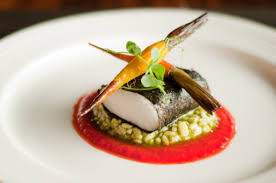
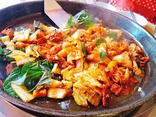
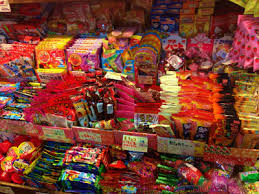

TOKIO
INICIO
ÁFRICA
AMÉRICA DEL NORTE
AMÉRICA DEL SUR
ASIA
EUROPA
OCEANÍA
GASTRONOMÍA

Asia es un gran influyente en la gastronomia internacional debido a platos típicos como el sushi, el sashimi, los tallarines o los platos en tempura como el que podemos obesrevar en la foto.

El pollo agridelce, es un plato típico de Asia oriental, concretamente de Dacca, Bangladesh.
El pescado y marisco es algo muy típico en el continente asiático, se consume de muchas formas diferentes, ya sea crudo, cocido, a la plancha,..

Los dulces asíaticos son conocidos internacionalmente debido a su bajo precio y a que son muy consumidos en este país.